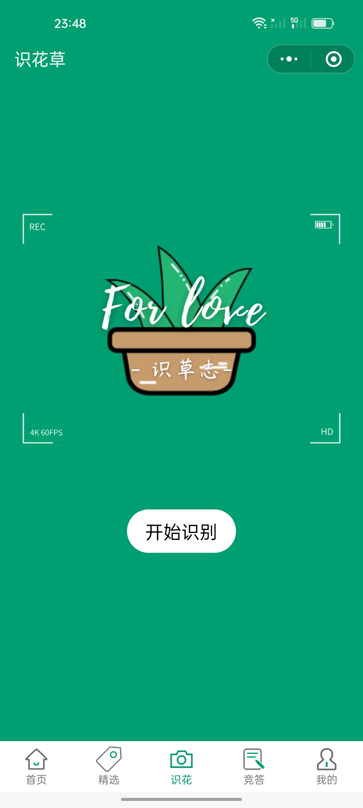
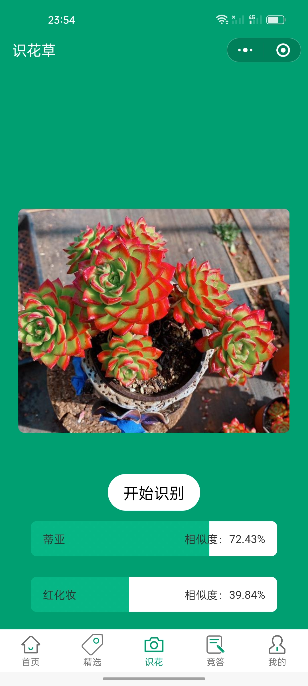
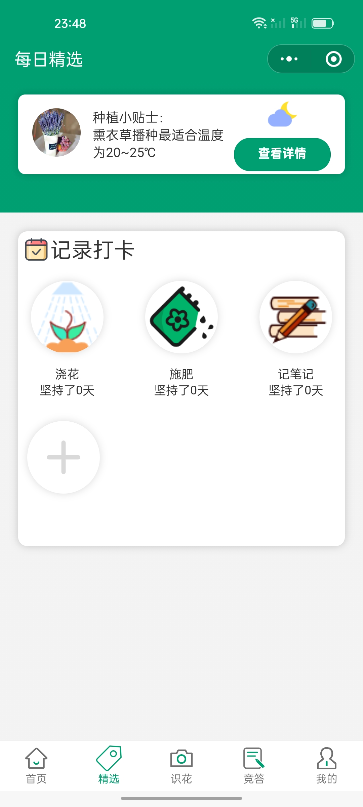
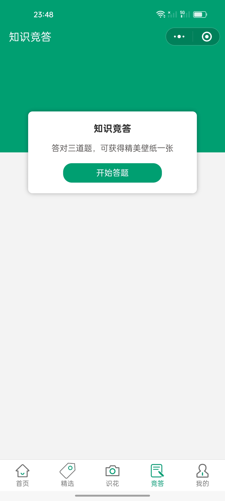
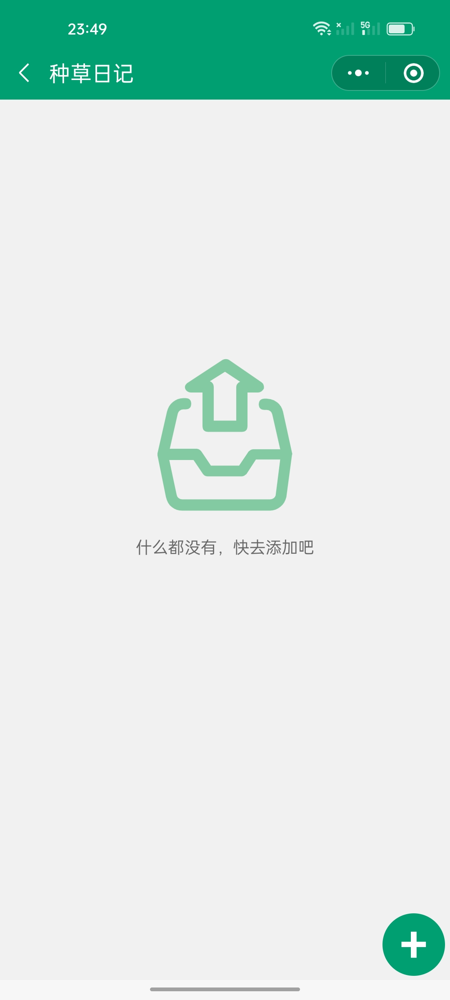
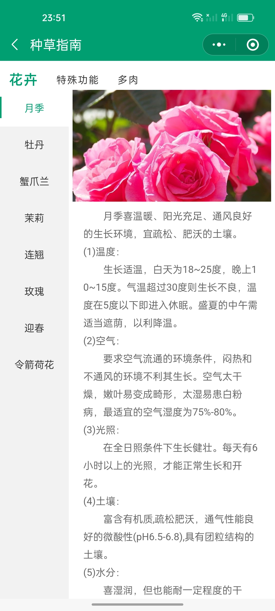
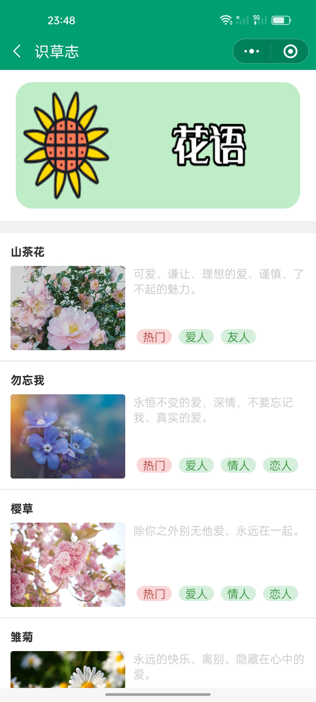
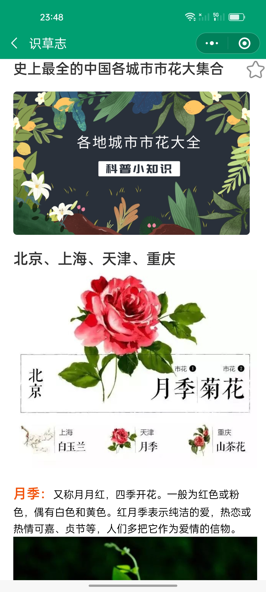
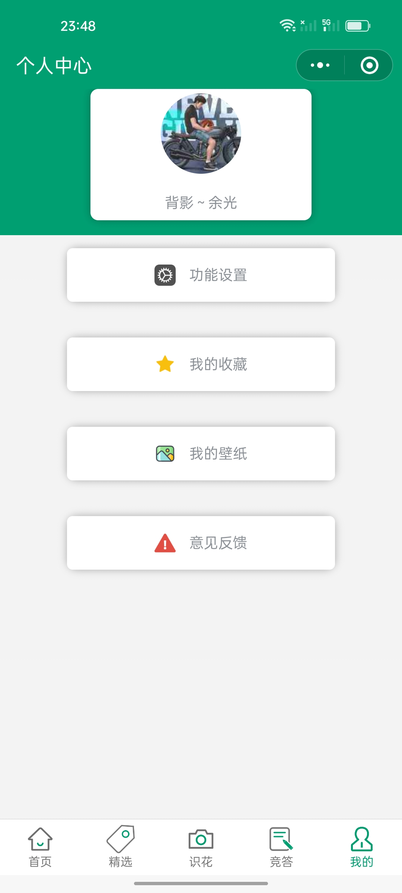

项目背景
很多植物爱好者在户外散步时经常看到不认识的花草，想知道名字却无从查询。识草志就是为了解决这个问题而设计的——打开小程序，拍照即可识别植物，还能记录种植日记、参与知识竞答，把学习植物知识变成一件轻松有趣的事。
核心功能
📷
拍照识花
调用微信拍照接口，上传图片到云端 AI 识别，秒级返回植物名称、科属和养护建议。
📖
种植日记
记录植物生长过程，支持文字 + 图片，右滑添加新习惯，双击修改信息，像手帐一样养花。
🎮
知识竞答
植物知识答题闯关，全对解锁壁纸奖励，支持题目收藏和错题回顾，边玩边学。
📑
精选文章
编辑精选的植物科普文章，涵盖花语、养护基础、诊断指南等，支持收藏和分享。
🌿
种植指南
分步种植指南和小贴士，从播种到开花，每个阶段都有详细的图文指导。
👤
个人中心
打卡记录、收藏管理、意见反馈，养成式的个人植物档案。
界面展示
 首页 — 轮播 banner + 功能入口
首页 — 轮播 banner + 功能入口

识花 — 拍照识别入口
识别结果 — 植物详情
精选 — 科普文章列表
竞答 — 植物知识答题
种植日记 — 空状态
种植指南 — 分步养护
卡片详情 — 植物图鉴
文章详情 — 图文阅读
我的 — 个人档案技术实现
基于微信小程序原生框架开发，使用 WXML + WXSS + JavaScript。云端接入植物识别 AI 接口，返回结果后展示植物百科信息。数据存储使用微信云开发 CloudBase，包括用户日记、收藏、答题记录等。底部 TabBar 五个页面，页面间通过路由跳转传参，支持图片预览、富文本解析（wxParse）等能力。
设计亮点
- 统一绿色品牌色（#009f72），贯穿整个 App 的导航栏、按钮、图标
- 手绘风植物插画，温馨亲和的视觉调性
- 竞答全对解锁壁纸的激励机制，提升用户粘性
- 种植日记支持右滑添加、双击修改的快捷手势操作
- 5 Tab 底部导航 + 二级页面返回，符合微信小程序交互习惯
项目成果
该项目参加大学生创新创业大赛，凭借完整的产品设计、可演示的微信小程序原型和清晰的答辩演示，获得校级一等奖。评委对拍照识花功能的准确度和竞答游戏的趣味性给予了高度评价。